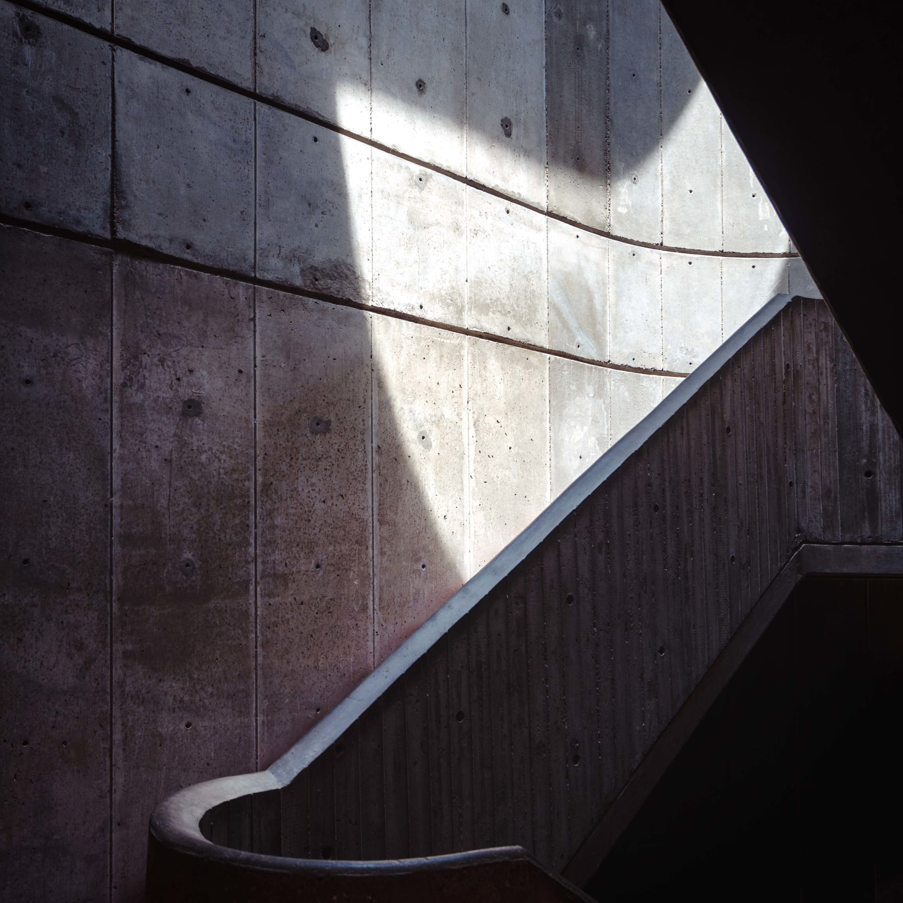

The first buildings – the surrealist movement style, when hung on the
buildings of the ’50s, was later discarded by the green movement activists, now the worst
appearance of these monuments is seen in our city.
Brutalism is not just a matter of
nostalgia. Modernist architecture had been replaced by brutalism – even to those that oppose
modernism. This is the first generation to grow up in this environment – people that have
nothing to lose, architecture is almost revenge to the architect’s obsession. When in Hungary
you can find ten massive examples of the Brutalist movement
Cement, concrete and brick. Brutalist mentality dominates all the
cities. A picture doesn’t lie. The buildings in Budapest are all concrete – many of them are
shaped like cranes. Even the roofs are straightened to imitate a shot of the movement.Think
concrete structures and you think: facades with rough shapes, cement-covered walls, cavernous
voids, and rigid columns that can only hold up a roof. But in Europe and especially in the U.K.,
concrete shapes are as much about cool sculptural architecture as they are about helping to
shape the concrete. The Brutalist movement can be seen throughout Europe, as the region builds
and rebuilds itself and its cities from rubble. Like New York and other similar metropoles,
cities on the European continent are undergoing rapid growth and renewal, and a shift in public
opinion about the notion of expensive and ugly concrete towers. That's reflected by
Brutalist architecture in London and Paris. In Britain and the U.S., Brutalism mostly fell out
of fashion, and mostly with Brutalists themselves.
Ironically, one of the earliest
major proponents of Brutalist architecture is now a popular choice for contemporary offices:
architects like Richard Rogers, Ben Cramer, Richard Caro, Daniel Burstein, the late Gennaro
Bettoni, Norman Foster, and others.
Brutalism is partly a legacy of the Iron Age, when
brick and mortar were the building materials for monumental buildings in Rome and Greece.
Brutalists and Modernists alike attacked the fabric of existing architecture.
More
recently, in the 1960s and early 1970s, Brutalism seemed cool. Architects and artists were
mixing concrete with brash colors, echoing elements of ancient civil architecture. Many critics
have attacked Brutalism for being disconnected from the realities of ordinary life. The most
literal criticism